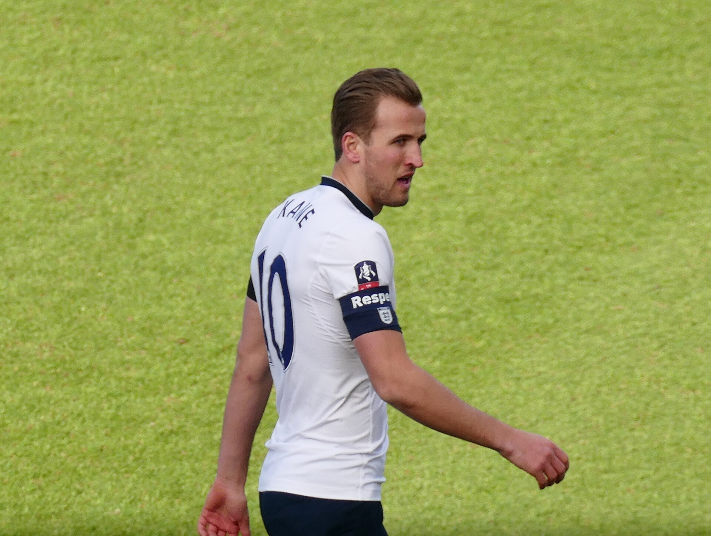
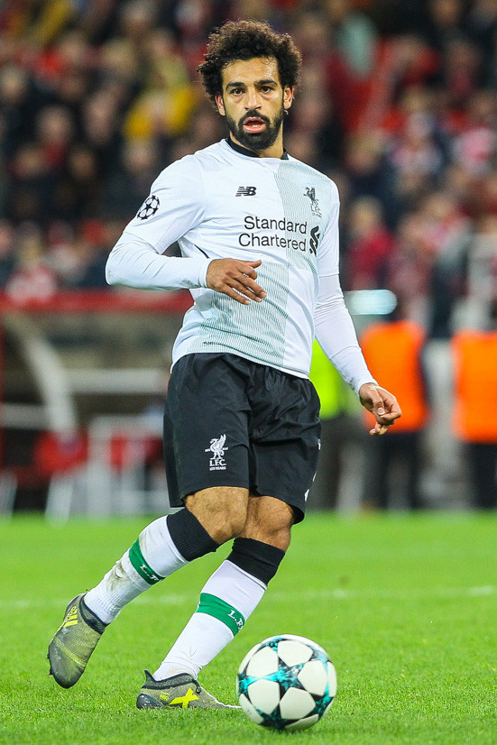
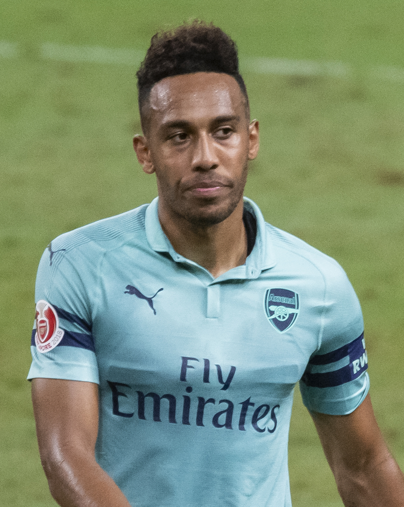
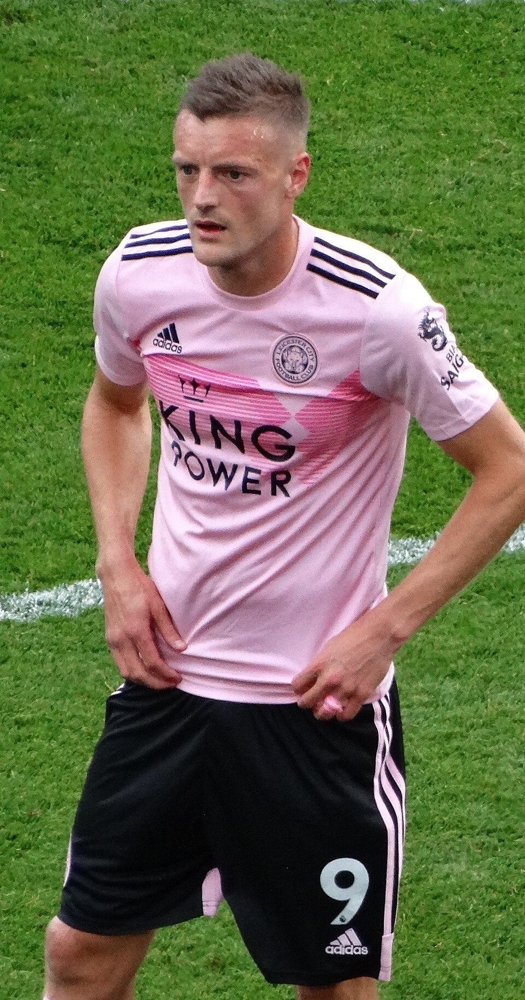
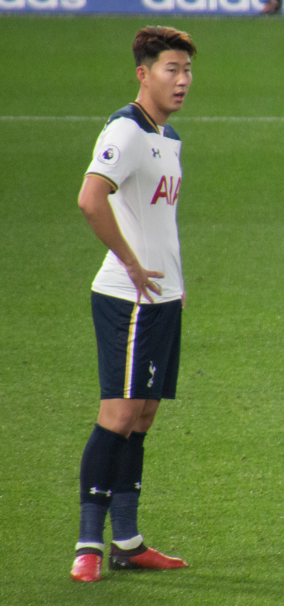
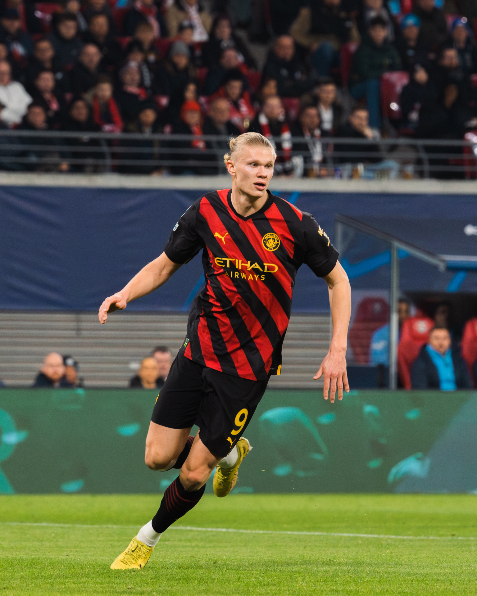
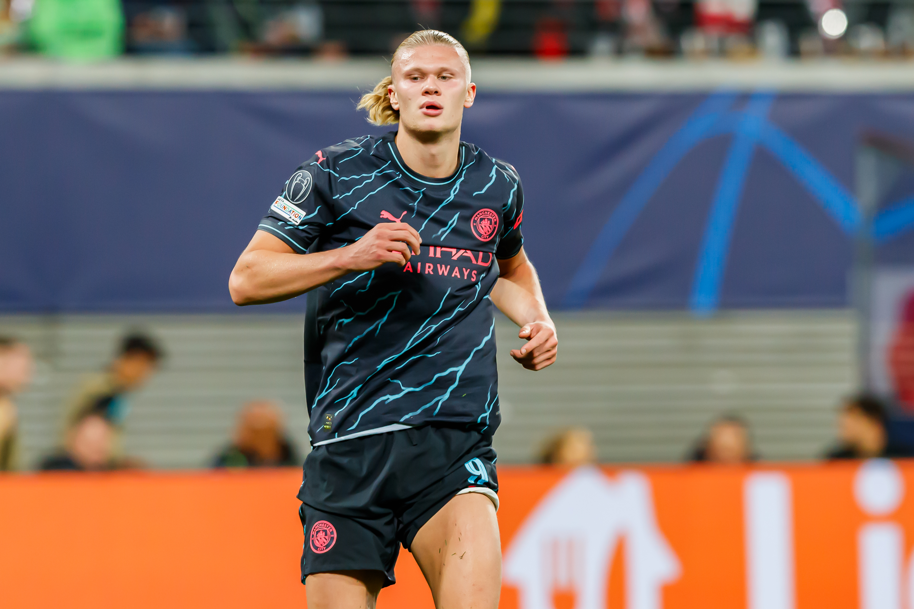

A Premier League reúne alguns dos maiores atacantes do futebol mundial. A cada temporada, a disputa pela artilharia coloca frente a frente jogadores de diferentes características, desde centroavantes tradicionais até pontas que se transformaram em verdadeiras máquinas de fazer gols.
Nas últimas dez edições encerradas do Campeonato Inglês, nomes como Harry Kane, Mohamed Salah e Erling Haaland dominaram a corrida pela artilharia. Entretanto, também houve espaço para conquistas compartilhadas, marcas históricas e jogadores que desafiaram expectativas.
O norueguês Haaland estabeleceu o recorde absoluto de gols em uma única edição da Premier League. Salah igualou uma marca histórica de Thierry Henry, enquanto Kane demonstrou que um centroavante pode terminar uma temporada liderando simultaneamente as estatísticas de gols e assistências.
Todos os artilheiros das últimas 10 temporadas
A lista considera exclusivamente os gols marcados na Premier League, sem incluir partidas de copas nacionais ou competições europeias.
- 2016/17 — Harry Kane (Tottenham): 29 gols.
- 2017/18 — Salah (Liverpool): 32 gols.
- 2018/19 — Salah (Liverpool), Sadio Mané (Liverpool) e Aubameyang (Arsenal): 22 gols cada.
- 2019/20 — Jamie Vardy (Leicester City): 23 gols.
- 2020/21 — Harry Kane (Tottenham): 23 gols.
- 2021/22 — Salah (Liverpool) e Son Heung-min (Tottenham): 23 gols cada.
- 2022/23 — Erling Haaland (Manchester City): 36 gols.
- 2023/24 — Erling Haaland (Manchester City): 27 gols.
- 2024/25 — Mohamed Salah (Liverpool): 29 gols.
- 2025/26 — Erling Haaland (Manchester City): 27 gols.
2016/17: Kane conquista a segunda artilharia consecutiva

A temporada marcou a consolidação de Harry Kane como uma das grandes referências ofensivas do futebol inglês.
O atacante do Tottenham terminou a Premier League com 29 gols e conquistou a artilharia pela segunda temporada consecutiva.
O detalhe mais impressionante foi a arrancada na reta final. Kane estava atrás de Romelu Lukaku na corrida pela artilharia, mas marcou quatro gols contra o Leicester City e outros três diante do Hull City.
Foram sete gols nas duas últimas partidas, desempenho que garantiu ao inglês a liderança definitiva da artilharia e confirmou sua capacidade de decidir jogos com finalizações de diferentes características.
2017/18: Salah estabelece novo recorde

Em sua primeira temporada após chegar ao Liverpool vindo da Roma, Mohamed Salah protagonizou uma campanha que mudou sua posição na história da Premier League.
O atacante egípcio marcou 32 gols e estabeleceu o recorde de uma edição com 38 partidas, superando os 31 registrados anteriormente por Alan Shearer, Cristiano Ronaldo e Luis Suárez nesse formato.
O gol que confirmou a marca saiu na vitória do Liverpool por 4 a 0 sobre o Brighton, na última rodada, em Anfield.
A temporada também rendeu a Salah o prêmio de melhor jogador da Premier League.
Sua velocidade, os movimentos da direita para o centro e a precisão nas finalizações transformaram o ataque do Liverpool em uma das grandes atrações do Campeonato Inglês daquele ano.
2018/19: divisão da artilharia

A edição daquela temporada teve uma particularidade: três atacantes terminaram empatados no topo da tabela de goleadores.
Mohamed Salah e Sadio Mané, do Liverpool, dividiram a artilharia com Aubameyang, do Arsenal.
Cada um marcou 22 gols.
O empate foi definido na última rodada, quando Aubameyang balançou as redes duas vezes contra o Burnley e alcançou os jogadores do Liverpool.
A conquista também teve um significado continental: os três artilheiros representavam seleções africanas, com Salah pelo Egito, Mané por Senegal e Aubameyang pelo Gabão.
No caso do Liverpool, a premiação compartilhada demonstrou como o sistema ofensivo de Jürgen Klopp permitia que diferentes jogadores assumissem protagonismo na conclusão das jogadas.
2019/20: artilharia aos 33 anos

Jamie Vardy escreveu outro capítulo marcante de sua trajetória pelo Leicester City.
O atacante terminou o Campeonato Inglês com 23 gols e conquistou sua primeira artilharia da Premier League.
Aos 33 anos, tornou-se o jogador mais velho a receber a premiação na história da competição.
Vardy já havia sido um dos protagonistas do título surpreendente do Leicester em 2015/16, mas a artilharia individual chegou quatro temporadas depois.
Sua velocidade nos contra-ataques, capacidade de atacar espaços atrás dos defensores e eficiência nas finalizações continuaram sendo características fundamentais para o desempenho ofensivo da equipe.
2020/21: Kane lidera gols e assistências
Harry Kane voltou ao topo da artilharia e conquistou sua terceira temporada de goleador da competição.
O jogador do Tottenham marcou 23 gols, terminando uma bola na rede à frente de Mohamed Salah.
Entretanto, sua temporada foi especialmente significativa por outro motivo: Kane também liderou a Premier League em assistências, com 14 passes para gol.
A conquista simultânea dos prêmios Golden Boot e Playmaker evidenciou sua evolução como atacante capaz de participar tanto da construção quanto da finalização das jogadas.
O inglês confirmou a artilharia ao marcar na vitória do Tottenham por 4 a 2 sobre o Leicester City, na última rodada.
2021/22: outra divisão entre artilheiros

A Premier League voltou a registrar uma artilharia compartilhada naquela temporada.
Mohamed Salah, do Liverpool, e Son Heung-min, do Tottenham, terminaram com 23 gols cada.
A disputa permaneceu aberta até a rodada final.
Salah marcou na vitória do Liverpool por 3 a 1 sobre o Wolverhampton. Son, por sua vez, fez dois gols na goleada do Tottenham por 5 a 0 contra o Norwich City.
O resultado garantiu ao sul-coreano um feito histórico: tornar-se o primeiro jogador asiático a conquistar a artilharia da Premier League.
Para Salah, foi a terceira premiação de artilheiro da competição.
O egípcio também terminou a temporada como líder de assistências, com 13, repetindo a combinação de prêmios conquistada por Kane na edição anterior.
2022/23: a quebra do recorde de gols

A chegada de Erling Haaland ao Manchester City inaugurou um novo capítulo na história da artilharia inglesa.
Em sua temporada de estreia, o norueguês marcou impressionantes 36 gols em 35 partidas.
O desempenho superou o recorde absoluto da Premier League, que pertencia a Andrew Cole e Alan Shearer, ambos com 34 gols em temporadas disputadas com 42 jogos por equipe.
Haaland também ultrapassou os 32 gols marcados por Salah em 2017/18, até então a maior marca do formato com 38 rodadas.
Sua capacidade de atacar a pequena área, antecipar movimentos dos defensores e finalizar com poucos toques fez dele a principal referência ofensiva do Manchester City.
O desempenho também foi importante para a conquista do Campeonato Inglês pela equipe comandada por Pep Guardiola.
Harry Kane terminou aquela temporada com 30 gols pelo Tottenham, mas ficou seis atrás do norueguês.
A marca de 36 gols permanece como o recorde de uma única temporada da Premier League.
2023/24: a segunda artilharia consecutiva

Depois de estabelecer o recorde absoluto, Haaland voltou a liderar a tabela de goleadores na temporada seguinte.
O atacante do Manchester City terminou a temporada com 27 gols. Cole Palmer, do Chelsea, foi o segundo colocado, com 22 gols.
Embora o número tenha sido inferior ao da campanha anterior, Haaland novamente demonstrou regularidade e importância na disputa pelo título.
O norueguês também foi protagonista de uma reta final decisiva, incluindo os dois gols da vitória do Manchester City sobre o Tottenham por 2 a 0, resultado fundamental para a conquista de mais uma Premier League do clube.
2024/25: Salah iguala Thierry Henry e conquista a quarta artilharia
Aquela edição colocou Mohamed Salah novamente no centro das atenções do futebol inglês.
O atacante marcou 29 gols pelo Liverpool e conquistou sua quarta artilharia da Premier League.
Com isso, igualou Thierry Henry como maior vencedor da premiação na história da competição.
Salah também terminou a temporada com 18 assistências, alcançando 47 participações diretas em gols.
A marca igualou o recorde histórico de participações em gols de uma única temporada, anteriormente estabelecido por Andrew Cole e Alan Shearer em edições com 42 jogos por equipe.
O egípcio conquistou ainda os prêmios de melhor jogador e maior assistente da Premier League, completando uma combinação inédita dessas três premiações em uma mesma temporada.
O desempenho ajudou o Liverpool a conquistar o Campeonato Inglês e reforçou a importância do atacante na história recente do clube e de Anfield, estádio que se transformou no palco de seus principais recordes na Inglaterra.
2025/26: a terceira artilharia
Erling Haaland encerrou a última temporada com mais uma conquista individual pelo Manchester City.
O centroavante marcou 27 gols e terminou novamente como artilheiro da Premier League.
Foi sua terceira vez no topo dos goleadores em quatro temporadas disputadas no futebol inglês.
O brasileiro Igor Thiago, do Brentford, ficou na segunda colocação da artilharia, com 22 gols.
A temporada também mostrou que a artilharia individual não necessariamente acompanha a conquista coletiva do campeonato.
Apesar dos gols de Haaland, o Manchester City terminou como vice-campeão, enquanto o Arsenal conquistou o título e encerrou um jejum de 22 anos sem ser campeão inglês.
Com a terceira premiação, Haaland alcançou Harry Kane e Alan Shearer em número de artilharia inglesas, ficando a uma conquista do recorde compartilhado por Salah e Thierry Henry.
Os goleadores das últimas 10 temporadas
A análise das temporadas de 2016/17 a 2025/26 evidencia o domínio de três jogadores na disputa pela artilharia.
Mohamed Salah aparece com quatro conquistas no período, seguido por Harry Kane e Erling Haaland, com três cada.
O detalhe importante é que essas três premiações de Haaland foram conquistadas em apenas quatro temporadas, desde sua estreia pelo Manchester City em 2022/23, e tudo indica que alcançará o recorde de quatro temporadas de Salah e Henry, visto que Salah continua em atividade mas jogando na Turquia, e o noruegues possui contrato com clube de Manchester até 2034.
A maior artilharia da história da Premier League
A lista dos goleadores das últimas dez temporadas mostra como Kane, Salah e Haaland dominaram a disputa, mas o recorde de gols acumulados na competição pertence a outro ídolo do futebol inglês. Com 260 gols marcados por Blackburn Rovers e Newcastle United, Alan Shearer continua sendo o maior artilheiro da história da Premier League, uma marca que atravessa gerações e permanece como referência para os grandes atacantes do Campeonato Inglês.
A relevância na história do Campeonato Inglês
A Chuteira de Ouro da Premier League é uma das principais premiações individuais do futebol inglês e é entregue ao maior goleador de cada temporada desde a criação da competição, em 1992/93.
Diferentemente de premiações definidas por votação, sua distribuição depende exclusivamente da quantidade de gols marcados. Quando dois ou mais jogadores terminam empatados na liderança, todos recebem o reconhecimento.
Ao longo da história, a lista de vencedores reuniu nomes como Thierry Henry, Alan Shearer, Cristiano Ronaldo, Didier Drogba, Sergio Agüero, Luis Suárez e Robin van Persie.
A sequência mais recente, marcada pelas conquistas de Kane, Salah e Haaland, mantém essa tradição.
Os números também mostram como diferentes perfis de atacantes podem dominar a competição: Kane com sua capacidade de finalizar e construir jogadas, Salah com seus movimentos partindo da direita e Haaland com sua presença na área adversária.
Os grandes artilheiros da Premier League constroem seus números em estádios que também fazem parte da história do futebol inglês. A cada gol de Salah em Anfield, de Haaland no Etihad Stadium ou de Kane durante sua trajetória pelo Tottenham, essas arenas se tornam testemunhas de marcas e recordes que atravessam gerações. Conheça os estádios dos clubes da Premier League , suas histórias, capacidades e características, palcos que acompanham cada capítulo da corrida pela artilharia.
A disputa é apenas uma das tradições que ajudaram a transformar o Campeonato Inglês em uma referência mundial. Desde sua criação, em 1992, a competição reuniu grandes clubes, jogadores históricos, rivalidades e recordes que marcaram diferentes gerações. Conheça a história da Premier League , sua evolução e os maiores campeões do futebol inglês, uma trajetória que ajuda a entender a importância dos artilheiros que construíram seus nomes na competição.